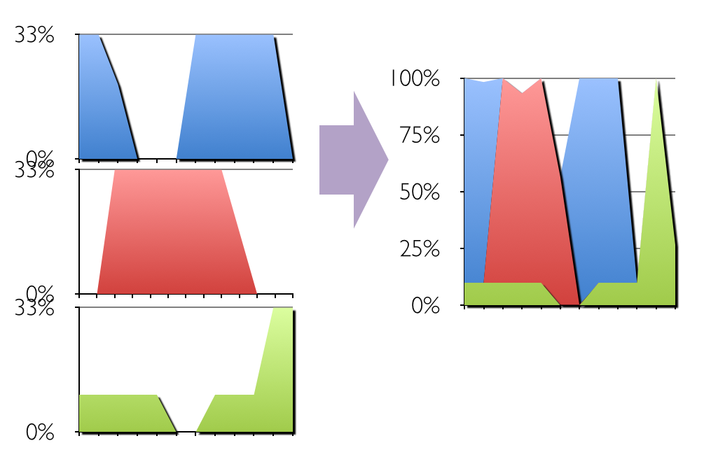
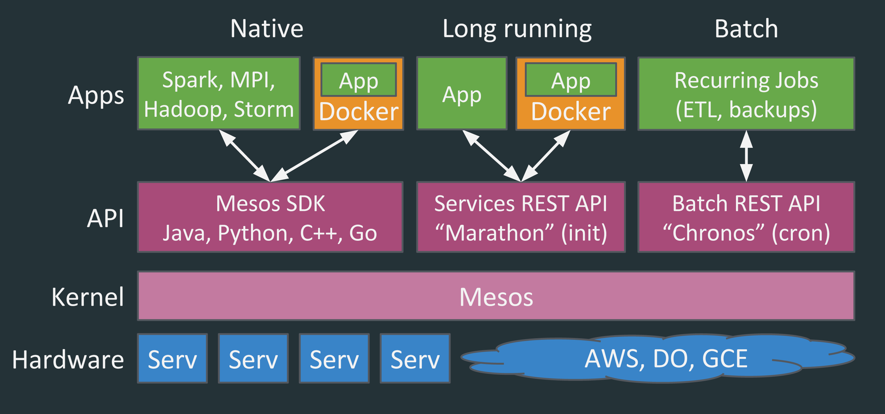
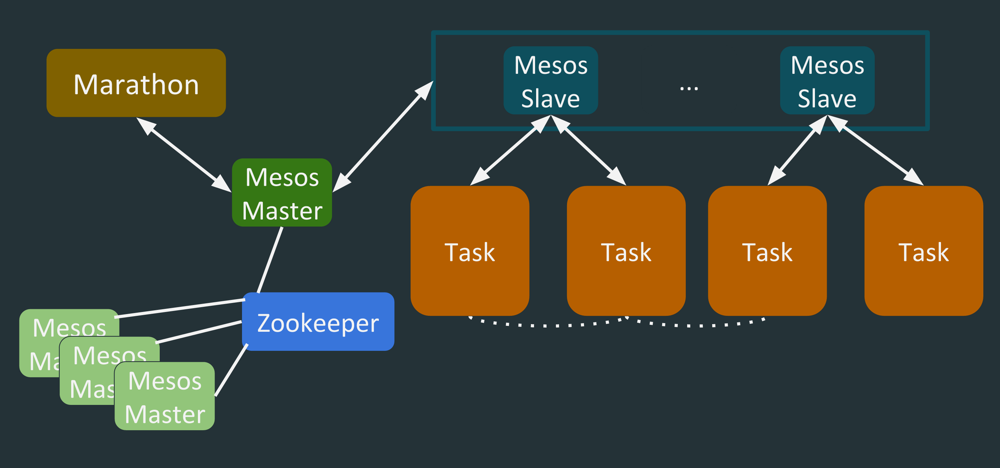

Apache Mesos
In a Nutshell
A little history
- Research project at Berkeley in early 2009 by Benjamin Hindman, Andy Konwinski, Matei Zaharia, Ali Ghodsi, Anthony D. Joseph, Randy Katz, Scott Shenker, Ion Stoica
- Hardened in Twitter
- Top-level Apache Project
Motivation
Increase performance and utilization of clusters
© Fabioberni
Intuition
Static partitioning is considered harmful
© hightimes.com
Static partitioning is harmful
 |
|||
 |
Static partitioning is harmful
Some random Mesos facts
- Mesosphere, Twitter are major users and contributors
- Scales to 10 000s of nodes, production grade
- Packages and support through Mesosphere
- APIs in C++, Python, JVM-languages, Go and counting
- Built-in containerization, including Docker
- Multi-tenant workloads, failure detection, easy failover and HA
Apps in the Cloud Era
| App | App | App | App | App | ||||
| Virtualization | ||||||||
| Aggregation | ||||||||
| Server | Serv | Serv | Serv | Serv | ||||
Mesos: Level of abstraction
| PaaS | Deploy and manage applications/services |
| Mesos | Build and run frameworks using resources |
| IaaS | Provision and manage machines |
Mesos: Level of abstraction
| PaaS | PaaS on Mesos: Apache Aurora, Marathon, etc |
| Mesos | |
| IaaS | Use OpenStack, AWS, GCE, DO to run Mesos |
Mesos on IaaS++
| Framework | ||
| Mesos | Common functionality via API | |
| Hardware | IaaS | Use cloud instances or physical machines to run Mesos |
Mesos: A level of indirection
|
Coordinator Scheduler |
||||
| Mesos master | ||||
|
Workers Mesos nodes running tasks |
||||
Mesos: A level of indirection
Provides common functionality every new distributed system re-implements:
- Failure detection
- Task distribution
- Task starting
- Task monitoring
- Task killing
- Task cleanup
Apache Mesos is a distributed system for building and running other distributed systems
Why reinventing the wheel?
© stebok.net
Mesos: Architecture

Mesos: Two level scheduling
- Framework gets allocated resources from the master
- Resources are allocated via resource offers
- A resource offer represents a snapshot of available resources (one per node)
- Framework uses these resources to decide what tasks to run
- A task can use a subset of an offer
- Framework can reject an offer
- Framework can hoard offers
- Framework can check additional attributes
Anatomy of a framework
- Roles, Reservations, Persistence
- Scheduler HA, Reconciliation, State Abstraction
- Status Updates, Framework Messages
- Authentication, ACLs
- DCOS Integration, 1.0 HTTP API
The core dynamic
- Receive resource offers
- Make decisions (launch tasks, or decline)
- Receive status updates
- Update local view of the global state
Tools at your disposal
- The State abstraction
- Status updates
- Custom executors
- Framework messages
Resource offers
message Offer {
required OfferID id
required FrameworkID framework_id
required SlaveID slave_id
required string hostname
repeated Resource resources
repeated Attribute attributes
repeated ExecutorID executor_ids
}
message Resource {
required string name
required Value.Type type
optional Value.Scalar scalar
optional Value.Ranges ranges
optional Value.Set set
optional string role [default = "*"];
optional DiskInfo disk
}
Resources are consumed by launching, declining, or accepting offers
Scheduler calls
| Lifecycle management | Register, Reregister, Unregister | |
| Resource allocation | Request, Decline, Revive | |
| Task management | Launch, Kill, Reconcile | |
| Communication | sendFrameworkMessage |
Scheduler events
| Lifecycle management | Registered, Reregistered | |
| Resource allocation | Offers, Rescind | |
| Task management | TaskStatus | |
| Communication | frameworkMessage |
Executor events
| Lifecycle management | Registered, Reregistered, Disconnected, Shutdown | |
| Task management | launchTask, killTask | |
| Communication | frameworkMessage |
Executor calls
| Task management | sendStatusUpdate | |
| Communication | sendFrameworkMessage |
Framework pattern: Resource math
- Tasks are typically launched on partial offers
- Does this offer satisfy a task I want to run?
- What's left of the offer after I launch this task?
Framework Pattern: Tracking task metadata
- Scheduler state is usually associated with TaskIDs
- Update state upon receiving status updates
- Metadata can be persisted via State
Handling failures: Keeping the scheduler up
- Run your scheduler with a meta-framework
- Re-register with the previous FrameworkID
- Pick up any persisted metadata
- Perform task reconciliation
- Continue as before
Handling failures: Status updates
class MyScheduler:
...
def statusUpdate(self, driver, update):
...
# Where update.state can be
# TASK_STAGING = 6; // Initial state. Framework status updates should not use.
# TASK_STARTING = 0;
# TASK_RUNNING = 1;
# TASK_FINISHED = 2; // TERMINAL. The task finished successfully.
# TASK_FAILED = 3; // TERMINAL. The task failed to finish successfully.
# TASK_KILLED = 4; // TERMINAL. The task was killed by the executor.
# TASK_LOST = 5; // TERMINAL. The task failed but can be rescheduled.
# TASK_ERROR = 7; // TERMINAL. The task description contains an error.
Delivery guarantee
- At-least-once (status updates)
- At-most-once (framework messages)
Task reconciliation
let start = now()
let remaining = { T ϵ tasks | T is non-terminal }
3: Perform reconciliation: reconcile(remaining)
Wait for status updates to arrive (truncated exp backoff).
For each update, note the time of arrival.
let remaining = { T ϵ remaining | T.last_update_arrival() < start }
If remaining is non-empty, go to 3.
Authorization and ACLs
message FrameworkInfo {
...
optional string principal = 8;
...
}
mesos-master ... --acls="{
"permissive" : false,
"register_frameworks": [
{
"principals": { "values": ["HDFS"] },
"roles": { "values": ["storage"] }
}, {
"principals": { "type": "ANY" },
"roles": { "values": ["*"] }
}
],
"run_tasks": [
{
"principals": { "values": ["Marathon", "Chronos"] },
"users": { "values": ["root"] }
}
]}"
Mesos 1.0 HTTP API
- /events endpoint
- Schedulers POST registration data here
- Expected to keep a persistent connection open
- Replaces scheduler callback methods
- Chunked-Transfer encoding, one chunk per update
- /call endpoint
- Replaces scheduler driver methods
Containerization and isolation
- Static application composition
- Reliable deployment
- Unit of resource isolation
- Execution isolation
- Multi-tenancy without heavyweight VMs
Docker
- Open source
- Configurable layers
- Reproducible
- Version-controlled
- Plenty of other people's containers
- First-class citizen in Mesos and the Mesosphere stack
- Kubernetes employs and promotes Docker
- Security (isolator that does not isolate)
- Big images, long fetch time
- Vendor lock
- Persistent volumes
Run everything in containers
© Gerard Julien/AFP
© Unknown
© Unknown
Manage containers with Mesos
© ect.nl
The Mesosphere stack
The DCOS stack

DCOS: Contributions to Mesos
- Module subsystem (lifecycle, python)
- Modules (authenticator, allocator, isolator)
- Offer reservation
- Security and ACL improvements
- etcd alternative
DCOS: Mesosphere open source efforts
- Mesosphere package repo [github://mesosphere/universe]
- HDFS on Mesos [github://mesosphere/hdfs]
- Cassandra on Mesos [github://mesosphere/cassandra-mesos]
- K8s on Mesos [github://mesosphere/kubernetes-mesos]
- DNS service discovery [github://mesosphere/mesos-dns]
- ... and counting
Mesos on Mesosphere
Mesos on Mesosphere